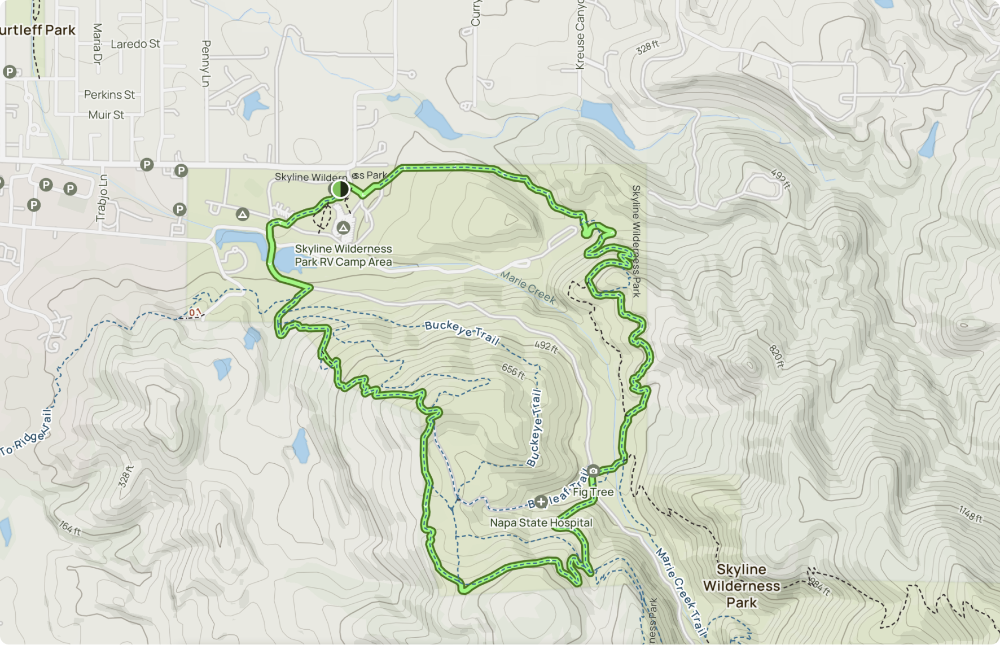

Morning hike at Skyline Wilderness Park
For my hike this morning I did the Skyline Trail and Manzanita Trail Loop. It was a beautiful morning without many other folks on the trail. I got to see a good view of the valley from up in the foothills. I ended my hike with a quick walk in the Martha Walker Native Habitat Garden.
